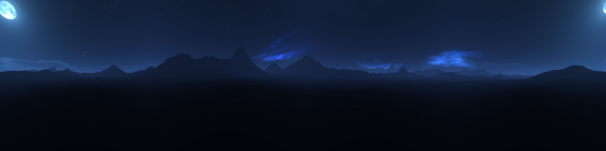

<!DOCTYPE html>
<html>
  <head>
    <meta charset="utf-8">
    <title>Hello, World! - A-Frame</title>
    <meta name="description" content="Hello, World! - A-Frame">
    <script src="https://aframe.io/releases/0.5.0/aframe.min.js"></script>
    <script src="aframe-animation-component.min.js"></script>
    <script src="gradientsky.min.js"></script>
    <script
      src="https://code.jquery.com/jquery-3.1.1.slim.min.js"
      integrity="sha256-/SIrNqv8h6QGKDuNoLGA4iret+kyesCkHGzVUUV0shc="
      crossorigin="anonymous">
    </script>
    <script src="water-material.js"></script>
    <script src="demo.js"></script>
    <script src="components.js"></script>
    <script src="particleSystem.js"></script>
    <script src="app.js" defer></script>
  </head>
  <body>
    <a-scene>
      <a-assets>
      <!--  -->      
      </a-assets>

      <!-- water (including moonlight reflection) -->
      <a-entity 
        water
      >
      </a-entity>

<!--       <a-entity 
        lantern
      >
      </a-entity>  -->

      <!-- boat -->
      <a-entity 
        boat
        position="0 .25 0"
        rotation="0 90 0"
        scale="0.6 0.5 0.5"
        animation="property: rotation; dir: alternate; dur: 2000; easing: easeInSine; loop: true; from: -3 90 0; to: 3 90 0"
      ></a-entity>

      <!-- 
        moonlight on other objects (this light should match in color and position with the water moonlight)
      -->
      <a-entity
        light="type: directional; color: #ffffff; intensity: .5"
        position="600 300 -600">
      </a-entity> 

      <!-- <a-sky src="#sky"></a-sky> -->

      <!-- skybox -->
      <a-gradient-sky 
        material="shader: gradient; bottomColor: 23 15 89; topColor: 11 4 25"
      >
      </a-gradient-sky>

    </a-scene>
  </body>
</html>
